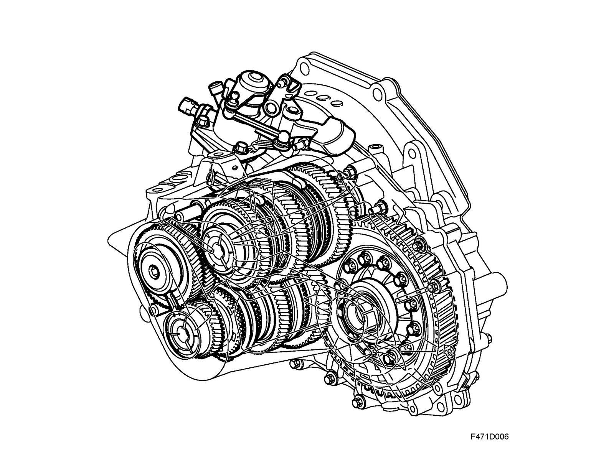

Brief Description
Brief description
The gearbox is designed for front wheel drive and integrated in a single unit with the engine. Between the engine and the gearbox is the freewheel clutch that is activated by a hydraulic system. The flywheel is mounted on the crankshaft and is of the dual-mass type. A dual-mass flywheel absorbs the irregular oscillations that are generated by a combustion engine and prevents these from propagating into the gearbox. This results in less noise and vibration from the transmission.
The drive unit is mounted transversely for good cooling and to provide the shortest possible route for the transfer of power to the drive wheels. This location also contributes to a compact engine bay. The gearbox is 6-speed and fully synchromesh.
The gearbox is filled with oil during production. This oil does not require changing.
The movement of the gear lever is transferred to the gearbox by means of so-called cable shift. This system prevents any movement arising from the drive unit being propagated to the gear lever and also offers extremely good lever response.